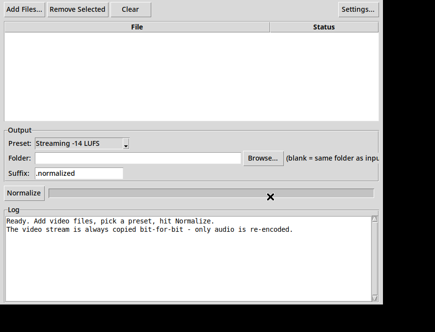

GainFrame normalizes any video's audio to broadcast loudness while the video stream is copied bit-for-bit — never re-encoded, never stripped, never degraded.
Free & open source · Portable zip, no installer · Windows 10/11 · ~91 MB (ffmpeg included)

Your video goes in. The same video comes out — with audio at a level that doesn't make anyone lunge for the volume knob. That is the entire product.
Two-pass EBU R128 loudnorm: GainFrame measures your file first, then applies a precise correction — not a blind volume bump.
Streaming −14 LUFS · Podcast −16 · Broadcast −23 · Peak normalize. Custom targets live in Settings for power users.
Multiple audio tracks? Each one is measured and normalized individually — not just the first.
Subtitles, chapters, and metadata are copied through untouched, along with the video itself.
Drop in a folder's worth of videos and let it work through them one by one, with per-file status.
MP4, MKV, MOV, WebM, AVI — anything ffmpeg can read. Output keeps the container and lands next to the original as name.normalized.mp4.
Normalizing a video's audio should be a solved, boring problem. Instead, the existing tools are a mess — sketchy installers that trip virus scans, and "audio" tools that quietly re-encode your video, degrade it, or strip the picture altogether and hand you back a sound file.
GainFrame is the boring tool that should have existed: one window, one job, built on ffmpeg, open source down to the build script — and a video stream it never touches.